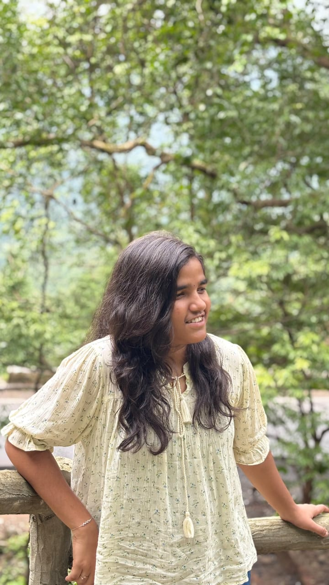

A passionate 2nd-year CSE student at IIT Goa.
I am currently pursuing Computer Science and Engineering at IIT Goa. I have a strong academic record, with a 98% score in Class 12 and a JEE Advanced rank of 9024. I am passionate about coding and technology and skilled in languages like Python, C++, C, HTML, CSS, and JavaScript. Besides academics, I am also a core member of the Eunoia Club for Arts.